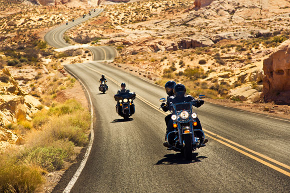
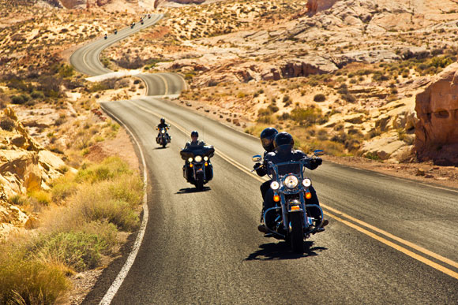
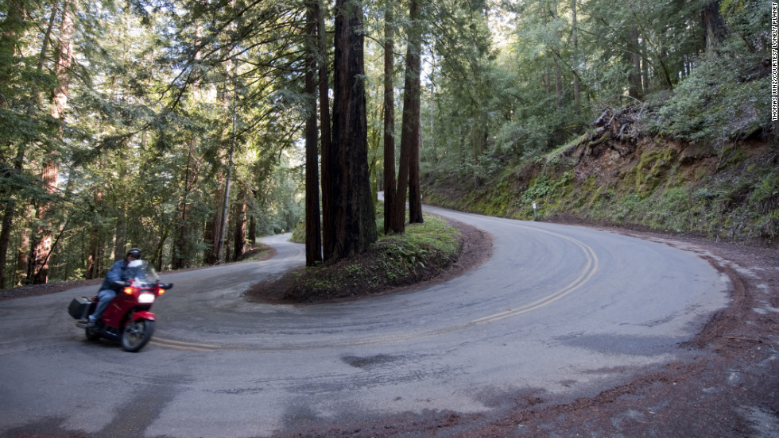
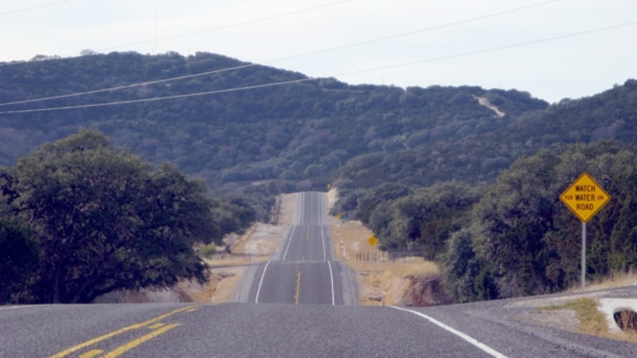
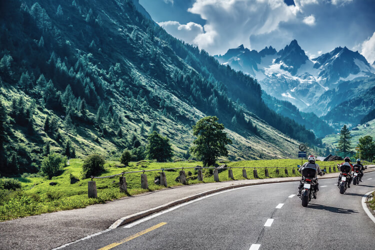
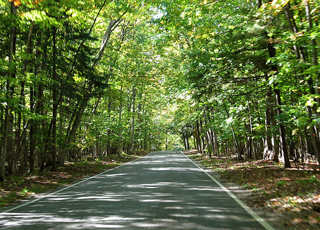

Trasy motocyklowe w USA
USA to prawdziwy raj dla motocyklistów z ogromną ilością tras a Amerykanie kochają motocykle co widać na każdym kroku
Kultowa Route 66
Na początek klasyk, o którym słyszał chyba każdy fan dwóch kółek. Śmiało można powiedzieć, że Route 66 to najsłynniejsza trasa w Stanach Zjednoczonych. Route 66 – historyczna trasa łącząca środkowo–wschodnią i zachodnią część USA.
To zdecydowanie więcej niż droga…
Route 66 to część historii wielkiego kraju. Jest naznaczona ścieżkami Indian, losem migrującej ludności w trudnych latach 20-tych, 30-tych XX wieku. Ta droga to nie tylko szlak pomiędzy wschodem a zachodem, to dzieje upadku miast i miasteczek po wybudowaniu autostrad międzystanowych, wspomnienia o wakacyjnych wyprawach pokonywanych krążownikami szos w latach 60-tach, to amerykańskie motele, przydrożne warsztaty, stacje paliw i kina samochodowe.
Startuje w Chicago i biegnie przez 8 stanów: Illinois, Missouri, Kansas, Oklahomę, Teksas, Nowy Meksyk, Arizonę i Kalifornię, aby zakończyć się na molo w Santa Monica.
Oprócz samego przejazdu słynnymi szóstkami warto po drodze zatrzymywać się w lokalnych, przydrożnych atrakcjach. Chyba w każdym stanie przez który przebiega trasa znajduje się muzeum Route 66. Przydrożne bary przyciągają podróżnych swoją oryginalnością – restauracja Big Texan w Amarillo w Teksasie serwuje 2,5-kilogramowego steka, którego można zjeść za darmo, jeśli skonsumuje się go (w całości i samodzielnie) w ciągu godziny od podania. Hotele także bywają wyjątkowe – w Wigwam Hotel (na trasie jest ich kilka!) możecie przespać się w pokojach wyglądających jak… indiańskie tipi (nie, nie jak wigwam, one wyglądają inaczej, ale nazwa chyba lepiej brzmiała ).
 

Wzdłuż jeziora Michigan
Droga jak z okładki magazynu dla motocyklistów. Dosyć wąska szosa ciągnie się wzdłuż brzegu jeziora Michigan, prowadząc podróżujących nią przez urokliwe, gęste ostępy leśne. Polecany jest głównie odcinek między miastami Harbor Springs i Cross Village. Warto wybrać się tam latem lub jesienią, gdy drzewa cieszą oczy zielenią, złotem lub całą gamą brązów. Od czasu do czasu spomiędzy drzew przeziera widok na samo jezioro, co stanowi dodatkowy atut tej trasy. Pamiętajcie jednak, że droga jest dosyć kręta, więc należy zachować ostrożność jadąc tamtędy.
 Trzy siostry w Teksasie
Three Sisters to wysoko ceniona i popularna trasa, łącząca w sobie trzy lokalne drogi – w sumie daje to ponad 200 km. Niby niedużo, ale biegnie przez tereny ranczerów i dzikie przestrzenie, dzięki czemu jest bardzo malownicza i urozmaicona – jadąc tamtędy mija się rzeki, bujnie zarośnięte pola, sady, wzgórza i kaniony. Wybierając tę trasę trzeba być jednak czujnym, ponieważ na drogach może pojawiać się bydło lub dzikie zwierzęta. Zwracajcie też uwagę na poziom paliwa, gdyż w tamtych stronach stacje benzynowe są od siebie bardzo oddalone. Do wypożyczenia motocykla wystarczy polskie prawo jazdy przetłumaczone na angielski, ale w czasie kontroli, może być nieciekawie – lepiej mieć międzynarodowy dokument.  